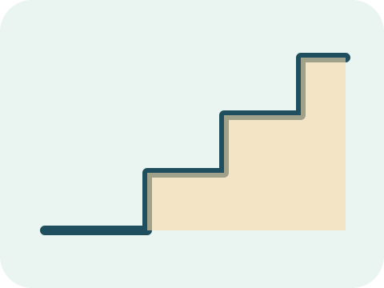
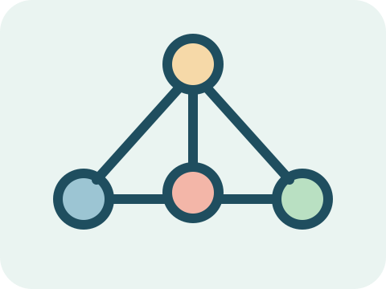

Modernity and the Emergence of SociologyHigh priority
Open every answer with the two revolutions, then the Renaissance and Enlightenment, then name the six influences: that frame fits nearly every PYQ.
Chapter map#
- Emergence of sociology
Precursors
- Kautilya, Manusmriti
- Buddha, Confucius
- Plato's Republic
Revolutions
- French 1789-99
- Industrial 1760-1840
Renaissance
- Scientific Revolution
- Commercial Revolution
Enlightenment
- Reason
- Scientific method
- Progress
Six influences
- Method, rationality
- History, evolution
- Surveys
USA
- Civil War
- Chicago 1892
- Parsons
Exam lens#
The story first#
In simple words#
- Sociology is the scientific attempt to understand modern society: it grew from the French and Industrial Revolutions.
- The Renaissance gave the scientific method; the Enlightenment gave reason, rationality and progress.
- Six influences shaped early sociology: scientific method, rationality, progress, history, evolution, surveys.
- In the USA it grew after the Civil War and became an academic discipline at Chicago (1892).
| Term | In plain words |
|---|---|
| Modernity | The way of life that came with the French and Industrial Revolutions: citizenship, industry, cities and reason. |
| Renaissance | 14th-17th century revival of art, literature and science (humanism, realism, empiricism). |
| Enlightenment | 17th-18th century Age of Reason that questioned Church and monarchy and trusted human reason. |
| Industrial Revolution | 1760-1840 shift to factory production, towns, new classes and new social problems. |
| Social survey | Method of studying social conditions to solve problems; Eden, Booth and Rowntree used it. |
| Social Darwinism | Spencer-Sumner idea of laissez-faire and survival of the fittest that Ward opposed. |
| Chicago school | 1915-1935 group that made urban sociology and fieldwork a core of the discipline. |
1 · Overview#
- MODERNITY AND SOCIAL CHANGES IN EUROPE AND THE EMERGENCE OF
- The emergence of sociology in the 19th century was not an accident but the outcome of profound and wide-ranging transformations in European society.
- As political systems, economic structures, intellectual traditions, and social institutions underwent dramatic change, earlier modes of understanding society proved inadequate.
- Sociology arose as a systematic and scientific attempt to make sense of these new social realities.
- French philosopher August Comte (1798-1857) who coined the term Sociology Timeline for Emergence of Sociology: 1.
- 1838 -August Comte coined the term ‘Sociology’
- 2. 1875 - First sociology course was introduced in the U.S.A. by William G.
- Sumner</b> 3. 1892 - First Department of Sociology was established in the U.S.A. by <b>Albion Small 4.
- 1895 - First Department of Sociology in Europe was established by Emile Durkheim
2 · Intellectual precursors: ancient and classical thought#

- Writings of ancient scholars and philosophers in both the East and the West were extensive; and discussed various aspects of social life.
- From Kautilya’s Arthashastra and Manusmriti in India, the teachings of Buddha and Confucius in India and China respectively, to Plato’s Republic; the ancient philosophy covered a wide array of societal concerns covering a wide range of social issues.
- These issues included the nature of the state, citizenship, social inequality, man-woman relationship, education, and family life.
- Modern sociology continues to grapple with many of the same questions that the ancient philosophers tried to address.
3 · Transformations in Europe and the birth of sociology#


- The discipline of sociology emerged in the 19th century in Europe in response to sweeping socio-political transformations.
- The French and the Industrial Revolutions had the combined effect of giving birth to the modern society.
- It was to understand the social changes accompanying the birth of modern society that the discipline of sociology was founded.
- The French Revolution (1789-1799) significantly impacted the nature of the polity, economy, and society in France.The political implications of the French Revolution was the end monarchy, weakening the powers of the Church, and introducing the modern ideas ofcitizenship,democracy, secularism andequal rights for all.Socially, i t challenged the old hierarchy and promoted the ideals of liberty, equality, and fraternity, giving ordinary people a new sense of dignity and participation.
- Economically, it weakened feudal land relations, encouraged a more open economy, and created conditions for capitalist growth by promoting free trade and private property.
- The Industrial Revolution (1760-1840) brought about significant changes in various aspects of social life in Europe.
- Economically , the Industrial Revolution gave rise to the industrial capitalist economy characterised by increase in productivity, mass-based production, skills specialisation, and expansion of trade and commerce.
- Industrial Revolution (1760-1840) not only affected how we produce, but also how we live Spatially, it led to large scale migration from rural areas to industrial towns and cities, and the development of slums.
- Socially, the Industrial Revolution resulted in the emergence of new social classes such as the capitalist class and industrial workers; nuclearization of the family, a sense of anonymity, loneliness, and social isolation amongst the industrial workers.
- Consequently, the traditional social order collapsed and made way for the rise of a new one.
- The existing branches of knowledge seemed inadequate and ill-equipped to make sense of these transformative changes.
- Old patterns of living and traditional modes of thought now seemed outdated.
- The sense of security and continuity associated with the old order was now replaced by an unseen uncertainty.
- Growth of slums and poverty in England prompted Marx and Engels to write on the conditions of the working class.
- New social problems arose. The industrial towns and cities were over-populated and urban resources were under immense strain.
- The living conditions of the working class in the urban areas were pathetic.
- Rampant industrial conflict, new diseases due to pollution and poor sanitation, rise in crime rates, and glaring inequalities were other major social issues in the industrial cities.
- It was to analyse these transformations in European societies and to address these new social problems that the discipline of sociology emerged.
- Social philosophers like August Comte, St. Simon, and Emile Durkheim took a keen interest in developing a scientific analysis of the turmoil and chaos in France.
- In England, scholars like Herbert Spencer were making efforts on similar lines.
- Karl Marx and Friedrich Engels analysed the exploitative nature of industrial capitalism and traced its historical development.
- In short, nearly all of the early social thinkers were keenly engaged in understanding the nature of the modern industrial society and finding solutions to the emergent social concerns.
- RENAISSANCE AND ENLIGHTENMENT - THE INTELLECTUAL FOUNDATIONS OF MODERN EUROPE AND OF SOCIOLOGY The transformative revolutions in Europe during the 18th and 19th centuries were made possible by the intellectual developments in Europe during the Renaissance and Enlightenment periods.
- Renaissance (14 - 17th Century) witnessed the Scientific Revolution and the Commercial Revolution.
- The Scientific Revolution entailed new scientific inventions and discoveries.
- Most importantly, it led to the discovery of the scientific method.
- The Commercial Revolution led to the development of the banking industry and the company form of organisation.
- It also led to the emergence of the middle class, which would later provide leadership for the revolutions in Europe.
- During Renaissance; art, literature, and science, all flourished.
- The scientific approach to various natural phenomenon, the human body, and social institutions became prevalent.
- Elements of the natural and social world became objects of close observation and experiments.
- Old ideas were challenged. The defining features of the Renaissance movement, namely humanism,realism, and empiricism also informed the discipline of sociology in its early years.
- The Enlightenment period (17th-18th Century) embodied a new spirit of awakening in European society.
- The Age of Reason marked a clear departure from the traditional thinking of feudal Europe.
- Intellectuals of the era started questioning each and every aspect of social life.
- Nothing was sacrosanct anymore - be it the authority of the Church, or the legitimacy of monarchical rule, or the very notion of god itself.
- Enlightenment thought argued that human beings are essentially rational.
- The society can be reorganised based on rational principles.
- Philosophers like Rousseau, Montesquieu, Voltaire, Hobbes, Locke, and Adam Smith created a new intellectual framework to explain various aspects of social life.
- Their writings laid down the foundation for the French and the Industrial Revolutions.
- The Enlightenment period also unleashed intellectual currents that influenced the early sociologists.
4 · Intellectual influences on early sociology#


- Sociology emerged as a response to the forces of change, which took place during 18th and 19th centuries in Europe.
- The ideas discussed again and again in early sociological writings are thus essentially ideas of that period.
- Enlightenment thinkers of 18th century affected early sociology.
- Enlightenment had a profound bearing on the origins of sociology, as follows:
- 1. Scientific method The 18th century thinkers began to consistently study the human conditions in a scientific way using the methods of the natural sciences.
- They applied scientific principles of analysis to the study of human beings and their nature and society.
- 2. Rationality The 18th century thinkers relied on reason to judge social institutions and their suitability for human nature.
- Human beings, according to them, are essentially rational and this rationality can lead them to freedom of thought and action.
- 3. Progress The 18th century thinkers believed that human beings are capable of attaining perfection.
- By criticising and changing social institutions they can create for themselves even greater degrees of freedom, which, in turn would enable them increasingly to actualise the potentially creative powers.
- Three other intellectual influences of the period immediately after Enlightenment also influenced the emergence of sociology in Europe:
- 4. History In the 19th century, history became an important intellectual influence.
- The basic idea was that society must have progressed through a series of steps from a simple to complex stage.
- It has given the concepts of historical periods and social types.
- The thinkers who developed the philosophy of history were St. Pierre and Giambattista Vico.
- Later; the sociological writings of Comte, Spencer, Marx and many others reflected the impact of this intellectual trend.
- 5. Biological Theories of Evolution The influence of history was further reinforced by the biological theory of evolution.
- Sociology moved towards an evolutionary approach, seeking to identify the main stages in social evolution.
- It tended to be modelled on biology, as is evident from the widely used concept of society as an organism, and from the attempts to understand the nature of social evolution.
- Herbert Spencer is the best example of this kind of writing.
- 6. Surveys Social survey forms an important element in modern sociology.
- It emerged due to two reasons, one was the growing conviction that the methods of the natural sciences could be extended to the study of human affairs; that human phenomenon could be classified and measured.
- The other was the concern with poverty as a social problem, following the recognition that poverty was not natural but social.
- The social survey is one of the principal methods of sociological inquiry.
- This became particularly popular after ‘The state of the poor’ (1797) by F.M.
- Eden. The basic idea which underlines this method is that through the knowledge of the social conditions one can arrive at solutions to solve the social problems.
- Later, Charles Booth and Benjamin S. Rowntree carried forward this legacy and carried out systematic social surveys focused on poverty in English cities of London and York during late 19th and 20the centuries.
- Early sociology was thus shaped by the intellectual climate created by Enlightenment rationality, scientific method, historical consciousness, evolutionary thought, and empirical social surveys.
- These influences pushed thinkers like Comte, Spencer, Marx and Durkheim to conceptualise society as something that could be studied systematically, explained scientifically, and reformed rationally.
- Later sociologists like T.B. Bottomore highlight that these very currents - Enlightenment ideas, evolutionism, and historical thinking - were foundational intellectual backgrounds that made the rise of sociology possible.
5 · Development of sociology in the USA#


- It is significant that an interest in sociology arose in the United States just after the American Civil War (1861-1865).
- The War left America with many problems which caught the attention of men.
- It had rocked the social structure of the American people to its foundations.
- It had challenged thinking men to a reconsideration of the fundamental problems of government and social relationships.
- Like every important war, the Civil War and its results disturbed the social structure and raised questions concerning settled opinions, and presented the challenge of re-examining some fundamental notions.
- It was a time when social readjustment was necessary and new relationships had to be established.
- It was in this background that in 1865 the American Social Science Association was formed in Boston.
- Frank Sanborn, one of the founders of the Association, attributes its origin to the necessity of studying the new questions raised by the Civil War.
- Also,European scholarship exercised an undoubted influence upon the minds of young Americans trying to think through a maze of new problems.Comte’s ‘Course of Positive Philosophy’;Spencer’s Study of Sociology (1873) and Principles of Sociology (1874) particularly affected the writings and social analysis of American scholars.
- The pioneers in sociology in the US were influenced by these early European sociologists.
- Also, about this time, a flood of students were going from America to European universities for study.
- When they came back to America and started contributing to social science research, the impact of European education and thought was clearly discernible in their writings.
- The development of sociology in the USA was thus greatly influenced by the development of sociology in Europe.William Graham Sumner in the U.S.A. was particularly influenced by the writings of Herbert Spencer and Comte.
- In 1875; for the first time, a course titled ‘Sociology’ was introduced in the U.S.A. by Sumner at the Yale University.
- Lester Frank Ward was the first President of the American Sociological Association Progressive Era (1901–1929) was a period of widespread social activism and political reform in USA.
- During this period, the discipline of sociology also took a direction away from Social Darwinism.
- Specifically,Lester Frank Ward challenged Social Darwinism.
- Ward was of the view that the purpose of science is not just to observe from a distance, but, instead, the discipline of sociology should seek to provide solutions, provide inputs into public policy, and seek to reshape the society.
- Ward was of the stated view that "The real object of science is to benefit man.
- A science which fails to do this is lifeless.
- Sociology, which of all sciences should benefit man most, is in danger of falling into the class of dead sciences.” Ward was a supporter of the concept of the welfare state.
- Ward critiqued Spencer and Spencer's theories of laissez-faire and survival of the fittest, which were popular in socio-economic thought in the United States after the American Civil War.
- Ward positioned himself in opposition to Spencer and Sumner (an advocate for Spencer's ideas), who had promoted the principles of laissez-faire.
- It was in 1883 that the first American book on sociology,L.F. Ward’s Dynamic Sociology, appeared.
- Ward is often described as a father of American sociology and served as the first president of the American Sociological Association from 1905 until 1907.
- This was also period of immense social activism.
- For instance, the writings of Black sociologist W.E.B. du Bois highlighted the problem of racial discrimination in American society.
- Du Bois was one of the founders of the National Association for the Advancement of Colored People (NAACP) in 1909.
- He was also a prolific author who highlighted racial discrimination in USA through his writings, and pioneered the civil right movement.
- From the academic writings of Sumner, sociology moved into the public realm though du Bois’s writings.
- The earliest feminist writings can be traced to Charlotte Gilman (1860-1935).
- Her works were primarily focused on gender, specifically gendered labor division in society, and the problem of male domination.
- The first full-fledged university department of sociology was established in 1892 at the University of Chicago by Albion W.
- Small, who in 1895 also founded the American Journal of Sociology.
- The ‘Chicago school’ rose to international prominence as an epicentre of advanced sociological thought between 1915 and 1935.
- Their works became the first major research to specialize in urban sociology.
- This was considered the Golden Age of Sociology, with influence on many well-known sociologists.
- Their research into the urban environment of Chicago would also be influential in combining theory and fieldwork.
- Some of the major figures of the Chicago school included Ernest Burgess,George Herbert Mead, Robert E.
- Park, W. I. Thomas, Louis Wirth, and Florian Znaniecki.
- GH Mead and CH Cooley were influential in the development of symbolic interactionism and social psychology at the University of Chicago.
- Chicago School’s contribution institutionalised field study methods and empirical urban research in sociology.
- By mid-20th century, the functionalist approach of Talcott Parsons (1902 –1979) came to dominate American sociology.
Traps#
| Trap | What goes wrong, and the rule |
|---|---|
| Who coined and who founded | Comte coined the term in 1838; Durkheim set up the first European department in 1895; Small the first US department in 1892. Exam-hall rule: coined = Comte; first Europe department = Durkheim; first US department = Small. |
| Sumner vs Small | Sumner introduced the first course (1875, Yale); Small established the first full department (1892, Chicago). Exam-hall rule: course = Sumner, department = Small. |
| Ward vs Spencer and Sumner | Ward challenged Social Darwinism and laissez-faire; Spencer and Sumner promoted them. Exam-hall rule: Ward = welfare state and reform. |
| Renaissance vs Enlightenment | Renaissance (14th-17th century) gave the scientific method; the Enlightenment (17th-18th) made reason and progress the core. Exam-hall rule: method = Renaissance; reason = Enlightenment. |
Recall sheet#
Read once, hide it, then rebuild the chapter from memory.
- Who coined 'Sociology' and when? August Comte, 1838
- First sociology course in the USA? William G. Sumner, Yale, 1875
- First US department of sociology? Albion Small, Chicago, 1892
- First European department? Emile Durkheim, 1895
- French Revolution dates? 1789-1799
- Industrial Revolution dates? 1760-1840
- What did the Scientific Revolution give? The scientific method
- What did the Commercial Revolution give? Banking, the company form and a middle class
- Which three come from the Enlightenment? Scientific method, rationality, progress
- Which three come after it? History, biological evolution, surveys
- Who wrote The state of the poor (1797)? F.M. Eden
- Who surveyed London and York? Charles Booth and Benjamin S. Rowntree
- First American book on sociology? L.F. Ward's Dynamic Sociology, 1883
- When was the Chicago school at its peak? 1915-1935
Abbreviation column#
| Short form | Full form | One-line meaning |
|---|---|---|
| USA | United States of America | Where sociology became a university discipline |
| NAACP | National Association for the Advancement of Colored People | Founded 1909; Du Bois was a founder |
| PYQ | Previous Years' Questions | Questions UPSC has already asked |
Revise#
| Day | What to do |
|---|---|
| Day 0 | Read the Exam lens and the notes; mark the chapter done |
| Day +1 | Recall sheet: read once, hide, rebuild |
| Day +3 | Flashcards: missed ones only |
| Day +7 | Quick quiz; fix each miss against the Traps |
| Day +21 | Write two Mains answers from memory using the skeletons |
| Day +45 | Blank-page test: redraw the chapter map |
Test yourself#
Quick quiz
Flashcards
Tap the card to flip.
Mains answer skeletons
One for each Mains PYQ quoted in the handout. Tap to open; try the answer first.
2024 · 20 marks · Sociology is the product of European enlightenment and renaissance. Critically examine this statemen…
Question. Sociology is the product of European enlightenment and renaissance. Critically examine this statement.
- Intro: name Modernity and the Emergence of Sociology and state the central idea in one line (see The story first).
- Body: build the answer from the notes under: Transformations in Europe and the birth of sociology; Intellectual influences on early sociology.
- Close: finish with the matching criticisms section and a one-line judgement.
2022 · 20 marks · What aspects of Enlightenment do you think paved way for the emergence of sociology? Elaborate.
Question. What aspects of Enlightenment do you think paved way for the emergence of sociology? Elaborate.
- Intro: name Modernity and the Emergence of Sociology and state the central idea in one line (see The story first).
- Body: build the answer from the notes under: Transformations in Europe and the birth of sociology; Intellectual influences on early sociology.
- Close: finish with the matching criticisms section and a one-line judgement.
2021 · 10 marks · Europe was the first and the only place where modernity emerged. Comment.
Question. Europe was the first and the only place where modernity emerged. Comment.
- Intro: name Modernity and the Emergence of Sociology and state the central idea in one line (see The story first).
- Body: build the answer from the notes under: Transformations in Europe and the birth of sociology.
- Close: finish with the matching criticisms section and a one-line judgement.
2020 · 10 marks · How did the Intellectual forces lead to the emergence of Sociology? Discuss
Question. How did the Intellectual forces lead to the emergence of Sociology? Discuss
- Intro: name Modernity and the Emergence of Sociology and state the central idea in one line (see The story first).
- Body: build the answer from the notes under: Intellectual influences on early sociology.
- Close: finish with the matching criticisms section and a one-line judgement.
2019 · 10 marks · Discuss the historical antecedents of the emergence of sociology as a discipline.
Question. Discuss the historical antecedents of the emergence of sociology as a discipline.
- Intro: name Modernity and the Emergence of Sociology and state the central idea in one line (see The story first).
- Body: build the answer from the notes under: Intellectual precursors: ancient and classical thought; Transformations in Europe and the birth of sociology.
- Close: finish with the matching criticisms section and a one-line judgement.
2016 · 10 marks · “Sociology is pre-eminently study of modern society.” Discuss
Question. “Sociology is pre-eminently study of modern society.” Discuss
- Intro: name Modernity and the Emergence of Sociology and state the central idea in one line (see The story first).
- Body: build the answer from the notes under: Transformations in Europe and the birth of sociology.
- Close: finish with the matching criticisms section and a one-line judgement.
2015 · 10 marks · How had enlightenment contributed to the emergence of Sociology?
Question. How had enlightenment contributed to the emergence of Sociology?
- Intro: name Modernity and the Emergence of Sociology and state the central idea in one line (see The story first).
- Body: build the answer from the notes under: Transformations in Europe and the birth of sociology; Intellectual influences on early sociology.
- Close: finish with the matching criticisms section and a one-line judgement.
2014 · 10 marks · Write a short answer of the following in about 150 words: How did the emergence of industrial societ…
Question. Write a short answer of the following in about 150 words: How did the emergence of industrial society change family life in Western Europe?
- Intro: name Modernity and the Emergence of Sociology and state the central idea in one line (see The story first).
- Body: build the answer from the notes under: Transformations in Europe and the birth of sociology.
- Close: finish with the matching criticisms section and a one-line judgement.
2013 · 10 marks · “Sociology emerged in Europe and flourished to begin with on social reformist orientation in the U.S…
Question. “Sociology emerged in Europe and flourished to begin with on social reformist orientation in the U.S.A.” -Comment.
- Intro: name Modernity and the Emergence of Sociology and state the central idea in one line (see The story first).
- Body: build the answer from the notes under: Development of sociology in the USA.
- Close: finish with the matching criticisms section and a one-line judgement.